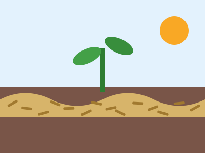

À quoi sert le paillage ?
Une couche de matière végétale posée sur le sol garde l'humidité, limite les mauvaises herbes, protège la terre du soleil et de la pluie battante, et nourrit les vers de terre en se décomposant.
Les étapes
- Désherber la planche et arroser abondamment la terre.
- Étaler le paillage en couche de 5 cm environ.
- Laisser quelques centimètres libres autour du pied des plants.
- Renouveler la couche quand elle s'est décomposée.
Combien de paillage ?
Entrez une surface pour estimer la quantité.
Quel matériau choisir ?
Survolez ou sélectionnez un matériau pour lire sa description.
Aucun matériau sélectionné.